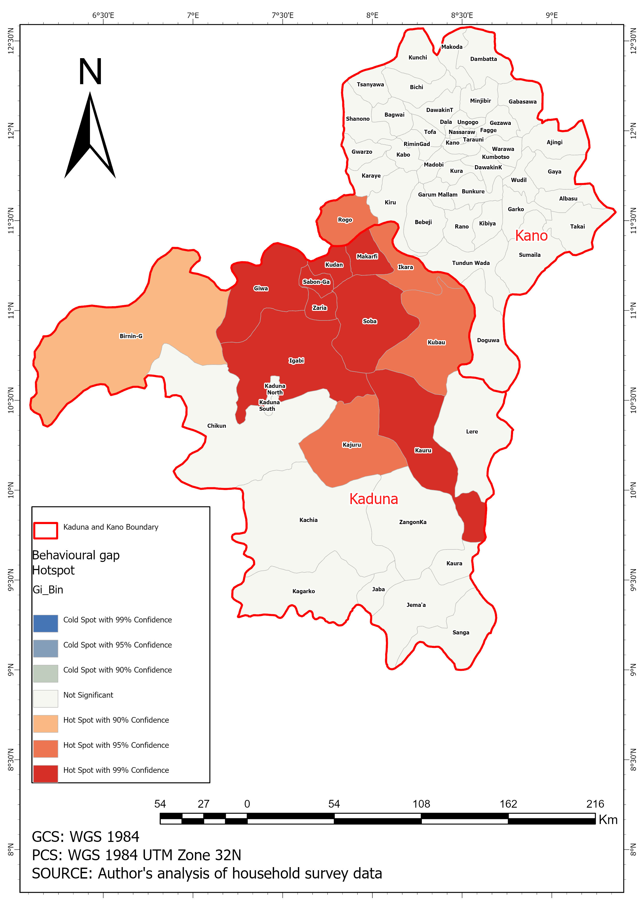

Spatial Analysis
Hotspot detection & spatial autocorrelation
Global Moran's I confirmed statistically significant spatial clustering of the behavioural gap across LGAs. The pattern is not random — LGAs with high gaps cluster together, and this spatial dependence justifies the use of local indicators to identify where the problem concentrates.
Getis-Ord Gi* hotspot analysis identified the specific LGAs driving this clustering. Kaduna's central corridor — including Igabi, Zaria, Sabon-Ga, Soba, and Kudan — emerges as a statistically significant hotspot at 99% confidence. These are LGAs where nets exist but are consistently not being used, pointing to behaviour-change interventions rather than additional net distribution.

Global Moran's I — confirming significant spatial clustering (p < 0.01)
Hotspot Map

Getis-Ord Gi* Analysis
Behavioural Gap Hotspot Map
Hot spots at 99%, 95%, and 90% confidence — Kaduna central corridor